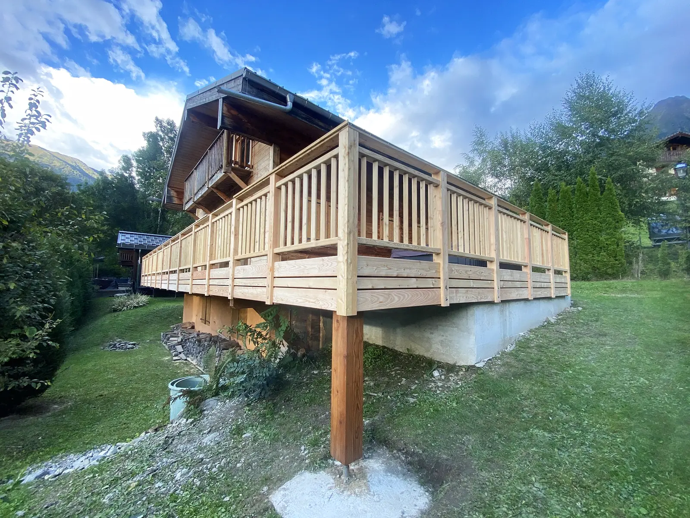
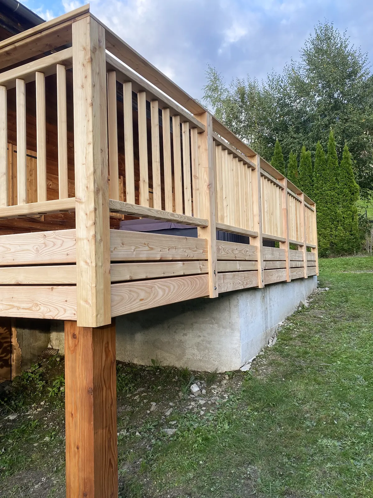
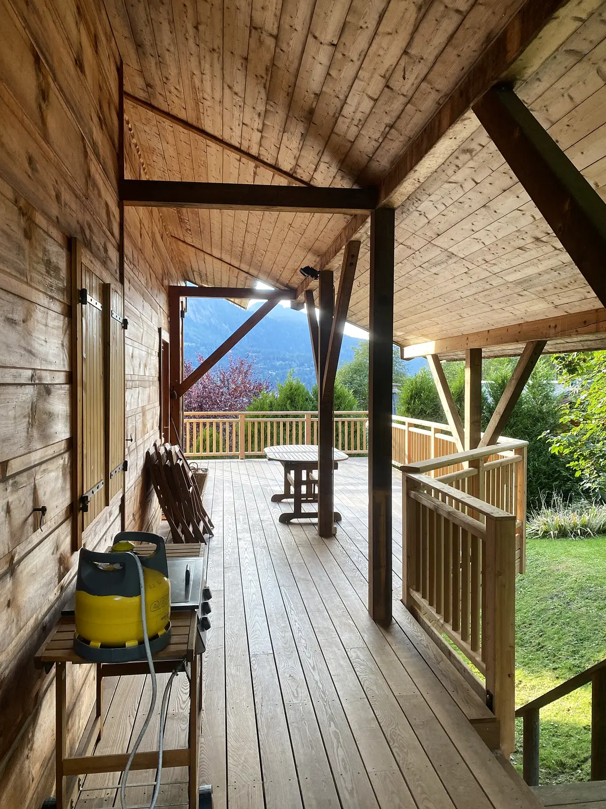

Douglas
Résineux robuste cultivé en France, naturellement durable. Idéal pour la charpente, l'ossature et le bardage.

Terrasses en bois, coursives, escaliers extérieurs et garde-corps : des ouvrages pensés pour durer dehors, avec des bois locaux choisis pour leur résistance.
Une terrasse réussie se joue sous les lames : une structure bien ventilée, l'eau qui s'évacue, des fixations adaptées. Je soigne chaque détail pour que votre terrasse reste belle et saine pendant des années.
Pour les lames et la structure, je privilégie des essences locales, comme le frêne, le chêne, le châtaignier ou le Douglas, plutôt que des bois exotiques.



Pour une terrasse, le frêne, le chêne et le châtaignier sont d'excellentes alternatives locales aux bois exotiques venus de loin.
Résineux robuste cultivé en France, naturellement durable. Idéal pour la charpente, l'ossature et le bardage.
Le bois noble de la charpente traditionnelle : dense, solide, superbe en poutres apparentes.
Résistant aux intempéries sans traitement chimique : bardages, terrasses, ouvrages extérieurs.
Bois clair, dense et élégant, apprécié notamment pour les terrasses.
Dès que c'est possible, je donne une seconde vie à des bois de qualité : moins de déchets, et des pièces qui ont une histoire.
Le frêne, le chêne et le châtaignier sont d'excellentes alternatives locales aux bois exotiques. Chaque essence a son aspect et son prix : je vous les présente lors de la visite.
Un nettoyage par an suffit. Sans traitement, le bois prend en vieillissant une teinte grise argentée ; si vous préférez garder sa couleur d'origine, une huile peut être appliquée régulièrement.
Une terrasse de plain-pied n'en demande généralement pas. Une terrasse surélevée peut nécessiter une déclaration préalable selon sa hauteur et sa surface : je vous aide à vérifier auprès de votre mairie.
Je viens voir votre maison, j'écoute votre projet et je vous remets un devis détaillé, poste par poste.